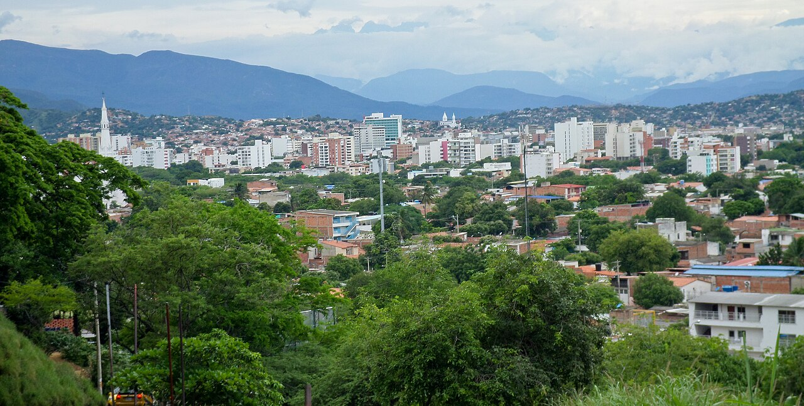

Norte de Santander · Colombia
Descubre
Cúcuta
Una ciudad para recorrer entre memoria, espacios abiertos y vida cotidiana.
Una ciudad, muchas maneras de vivirla
Encuentra tu propia
ruta por Cúcuta.
Camina por el centro y sus edificios reconocibles, haz una pausa al aire libre o descubre lugares para compartir y comprar. Elige una ruta y explora a tu ritmo.
Ver todos los lugaresEscoge qué descubrir
Lugares que cuentan
la ciudad.
Una selección para conocer Cúcuta desde sus espacios y su gente. Consulta cada ubicación antes de salir.
No encontramos lugares con esos criterios. Prueba con otra búsqueda o categoría.
El siguiente paso es tuyo
Cúcuta, lista
para recorrer.
Abre el mapa para consultar la ciudad y planear tu visita. Cada lugar de esta guía incluye un enlace de búsqueda en Google Maps; verifica allí la ruta y los datos vigentes.
Abrir Cúcuta en Google MapsUna guía independiente
Hecha para descubrir
sin afán.
Esta guía informativa reúne lugares históricos, culturales, espacios abiertos y puntos de encuentro de Cúcuta, Norte de Santander. Está pensada para visitantes y habitantes que quieren explorar la ciudad y consultar sus lugares en el mapa.
Es un proyecto académico independiente, no una publicación oficial. La información puede cambiar: confirma horarios, acceso y condiciones directamente con cada lugar antes de visitarlo.